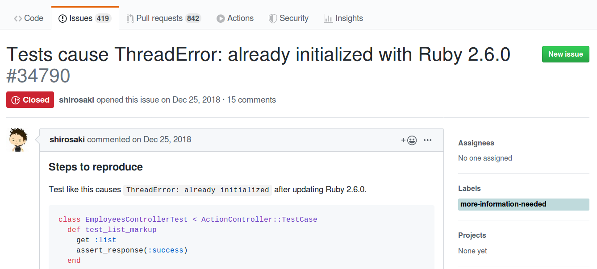
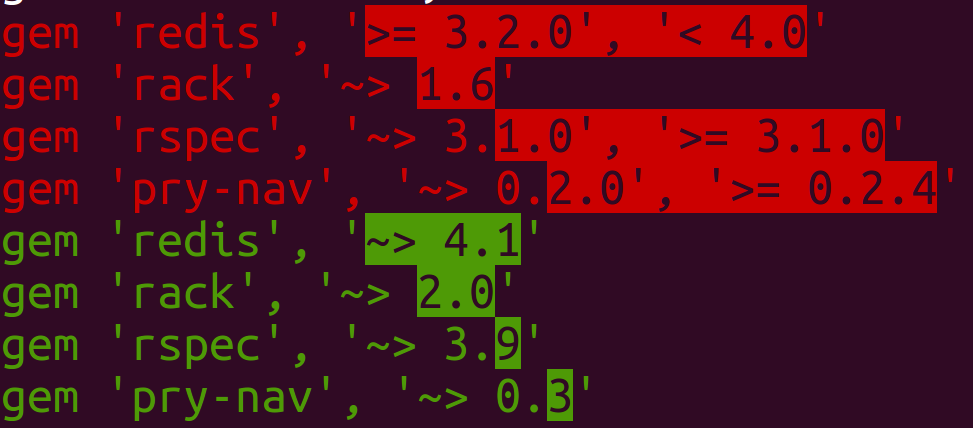
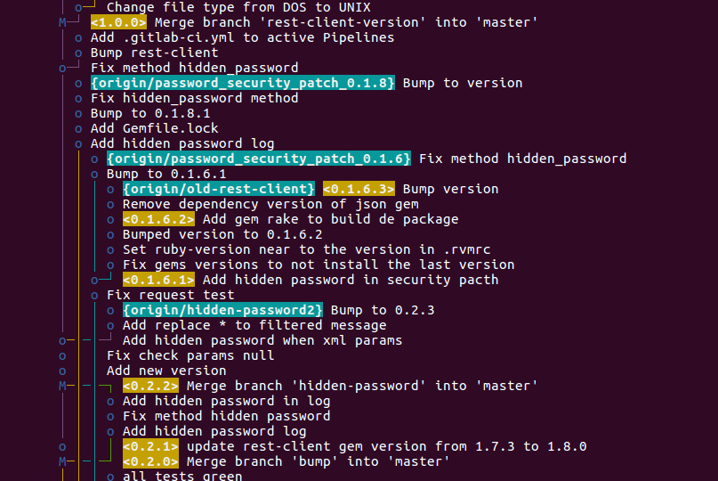

Showoff Menu
Close
Press ? for help.
All features are anonymous.
Press ? for help.
All features are anonymous.
Maybe I will try an international conference
There are foreign people in the conference
Thanks to Gabriel Klockner for the help!
Kernel#then)Ruby 2.7
status: preview
release date:
Ruby 2.6
status: normal maintenance
release date: 2018-12-25
Ruby 2.5
status: normal maintenance
release date: 2017-12-25
Ruby 2.4
status: security maintenance
release date: 2016-12-25
EOL date: 2020-03-31
Upgrading Ruby is a prerequisite to upgrade Rails (normally)
Rails has a release frequency slower than Ruby
I will not talk about upgrading Rails in this talk (maybe next year!)
Warning: there are some issues with EOL versions of Rails and new Rubies, ex: https://github.com/rails/rails/issues/34790

| Rails version | Compatible Rubies |
|---|---|
| 6.0 | >= 2.4, < 2.7 |
| 5.2 | >= 2.4, < 2.7 |
| 5.1 | >= 2.4, < 2.7 |
| 4.2 | >= 2.4, < 2.6 |
| 3.2 | >= 2.3, < 2.4 |
1.3 Ruby Versions
Rails 6 requires Ruby 2.5.0 or newer.
Rails 5 requires Ruby 2.2.2 or newer.
Rails 4 prefers Ruby 2.0 and requires 1.9.3 or newer.
Rails 3.2.x is the last branch to support Ruby 1.8.7.
Rails 3 and above require Ruby 1.8.7 or higher....| Application | Current Ruby | Number of dependencies | LOC | Bundle install ok? | Dificulty to pass all tests |
|---|---|---|---|---|---|
| feed-processor | 2.2 | 139 | 16.609 | yes | easy |
| criador-de-sites | 2.3.5 | 245 | 42.222 | no | - |
| hosting-panel | 2.4.2 | 156 | 36.244 | yes | easy |
| hosting-services | 2.3.5 | 155 | 55.257 | yes | impossible |
LOC: git ls-files | grep .rb | xargs wc -l
Number of dependencies: bundle | grep Using | wc -l
.ruby-version with the new versionbundle install
Evaluate the test coverage (simplecov) and increase the test coverage if necessary
Be careful with stubbed tests
Deploy the new version together with the old version (under a load balancer) and compare the error rating of both
Bundle install (the focus of this talk)
Running the tests
Deploy
Given a version number MAJOR.MINOR.PATCH, increment the:
MAJOR version when you make incompatible API changes,
MINOR version when you add functionality in a backwards compatible manner, and
PATCH version when you make backwards compatible bug fixes.note1: Ruby versions do not follow Semver, but the majority of the gems do!
note2: If necessary to upgrade a major version, search for files like CHANGELOG.md or RELEASES.md in gem's source to know why the compatibility was broken.
note3: If you are a gem maintainer, https://keepachangelog.com and follow Semver!
$ ruby -v
ruby 2.6.3p62 (2019-04-16 revision 67580) [x86_64-linux]
$ gem install oj -v '2.13.1'
Building native extensions. This could take a while...
ERROR: Error installing oj:
ERROR: Failed to build gem native extension.Example: https://rubygems.org/gems/oj/versions
...
3.0.1 - April 25, 2017 (172 KB)
3.0.0 - April 25, 2017 (172 KB)
2.18.5 - March 22, 2017 (125 KB) # <------- try this !
2.18.4 - March 22, 2017 (128 KB)
2.18.3 - March 15, 2017 (124 KB)
2.18.2 - March 02, 2017 (125 KB)
2.18.1 - January 13, 2017 (123 KB)
2.18.0 - November 26, 2016 (123 KB)
2.15.0 - March 28, 2016 (118 KB)
...
2.14.3 - December 31, 2015 (117 KB)
2.14.2 - December 19, 2015 (116 KB)
2.14.1 - December 15, 2015 (116 KB)
2.14.0 - December 05, 2015 (116 KB)
2.13.1 - November 16, 2015 (115 KB) # <--- current version
...https://github.com/ohler55/oj/blob/develop/CHANGELOG.md
2.18.0 - 2016-11-26
Ready for Ruby 2.4.s.required_ruby_version = [">= 2.3", "< 2.7"]Bundler could not find compatible versions for
gem "rest_model":
In Gemfile:
domain_api-client (~> 1.1) was resolved to 1.1.0,
which depends on
rest_model
provisioning-core was resolved to 13.4.0.ruby23,
which depends on
rest_model (~> 0.2)
sapi_client (~> 0.3) was resolved to 0.12.0,
which depends on
rest_model (>= 0.2)?? What is the problem ??
# This gem will work with 1.8.6 or greater...
spec.required_ruby_version = '>= 1.8.6'
# Only with ruby 2.0.x
spec.required_ruby_version = '~> 2.0'
# Only prereleases or final releases after 2.6.0.preview2
spec.required_ruby_version = '> 2.6.0.preview2'https://guides.rubygems.org/specification-reference/#required_ruby_version
Gems are not used to restrict the new versions, examples:
sinatra.gemspec: s.required_ruby_version = '>= 2.2.0'
webmock.gemspec: s.required_ruby_version = '>= 2.0'
public_suffix.gemspec: s.required_ruby_version = ">= 2.1"
rack.gemspec: s.required_ruby_version = '>= 2.2.2'
safe_yaml.gemspec: gem.required_ruby_version = ">= 1.8.7"
mustermann.gemspec: s.required_ruby_version = '>= 2.2.0'
tzinfo.gemspec: s.required_ruby_version = '>= 1.8.7'Upgrading from 2.3 to 2.6 should be easier than upgrading from 2.3 to 2.4!
(but don't tell that I told you to do it!)
oj 2.13.1 with Ruby 2.6.3oj is not defined in Gemfile (it's a 2nd level dependency)Example:
heartcheck (1.0.8)
oj1) Set as a dependency in Gemfile
Example:
# Gemfile
gem 'oj', '~> 2.18.5'2) Change the version in Gemfile.lock
Example:
- oj (2.13.1)
+ oj (2.18.5)3) Is there a better way??
'~> M.m' ?# example of a gem without version specification in
# Gemfile
gem 'aasm'
# $ bundle show aasm
# .../lib/ruby/gems/2.6.0/gems/aasm-4.12.3
# Now, add the version specification to "block" the
# major upgrade:
gem 'aasm', '~> 4.12'It should prevent bundle upgrade from using a new major version which could break some things.
Do not specify dependencies with '= M.m.p' or '~> M.m.p'
Be careful with '>= X' or '> X'
Prefer '~> M.m' or ['>= X', '< X']
Believe in Semver and help the others to upgrade their Rubies and gems!
ws_authentication_client wich depends on ox ~> 2.1.3 (2nd level dependency)ox supports Ruby 2.6 only in version >= 2.7
gem 'ox', '~> 2.7'
Error:
Resolving dependencies....
Bundler could not find compatible versions for gem "ox":
In Gemfile:
ox (~> 2.7)
ws_authentication_client was resolved to 0.0.2, which depends on
ox (~> 2.1.3)ws_authentication_client to accept new versions of gem ox
Example:
- spec.add_dependency 'ox', '~> 2.1.3'
+ spec.add_dependency 'ox', '~> 2.1'matrix:
include:
- rvm: 2.3
- rvm: 2.4
- rvm: 2.5
- rvm: 2.6matrix:
include:
- rvm: "2.2.2"
- rvm: "2.3.0"
- rvm: "2.3.3"
- rvm: 2.4
- rvm: 2.4
gemfile: Gemfile-redis-3
- rvm: 2.4
gemfile: Gemfile-redis-4
- rvm: 2.5
- rvm: 2.5
gemfile: Gemfile-redis-3https://github.com/locaweb/heartcheck-sidekiq/blob/master/.travis.yml
This gem has a dependency with the gem Redis:
spec.add_dependency 'redis', '>= 3.2.0', '< 5'
Do you need to keep this gem updated in projects with old versions of Ruby?
Assuming the new verions of the gem will compatible only with ruby >= 2.4
| Project name | Ruby version | Can upgrade the gem ? |
|---|---|---|
| nsa | 2.3 | No |
| hosting-panel | 2.4 | Yes |
| recipes-managed | 2.6 | Yes |
$ git log --follow -U0 -- Gemfile.lock \
| grep -e '^[+-] ' |sed -e 's/^[ +-]*//g' \
| sed -e 's/(.*//' \
| grep -v revision | grep -v 'remote:' \
| sort | uniq -c | sort -nr \
| head -n 100
624 provisioning-core # <--- internal gem
175 activesupport
173 product_manager-representers # <-- internal gem
92 activerecord
81 locaweb-authentication-client # <-- internal gem
72 rest_model
64 slogger
63 activemodel
57 windows_web_farm_client # <-- internal gemWarning: This command is not perfect!
if RUBY_VERSION in the codeExample:
# in .gemspec
if RUBY_VERSION < '2.3.0'
spec.add_dependency 'ox', '~> 2.1.3'
else
spec.add_dependency 'ox', '~> 2.1'
end.gemspec is processed when the gem is built (rake build)Example: 13.6.0.ruby23 and 13.6.0.ruby26
Warning: Doing this, it will not work gem 'X', '> 13.6' in Gemfile
But it can be a nightmare to manage the branches if you need to change something in older versions!

Do not check Gemfile.lock into git (https://yehudakatz.com/2010/12/16/clarifying-the-roles-of-the-gemspec-and-gemfile)
Set required_ruby_version in Gemspec with a range
Setup the pipeline to run the tests for all supported versions
Use different Gemfiles to run the tests (to test all supported versions of some gem)
Only add dependencies if it is really necessary!
https://keepachangelog.com and follow Semver!
# Changelog
All notable changes to this project will be documented in this file.
## [1.0.0] - 2017-06-20
### Added
- New visual identity by [@tylerfortune8](https://github.com/tylerfortune8).
- Ukrainian translation from [@osadchyi-s](https://github.com/osadchyi-s).
### Changed
- Start using "changelog" over "change log" since it's the common usage.
- Fix phrasing and spelling in German translation.
### Removed
- Section about "changelog" vs "CHANGELOG".
## [0.3.0] - 2015-12-03
### Added
- RU translation from [@aishek](https://github.com/aishek).
- pt-BR translation from [@tallesl](https://github.com/tallesl).Example: https://github.com/rails/rails/issues/34790
if RUBY_VERSION>='2.6.0'
if Rails.version < '5'
class ActionController::TestResponse < ActionDispatch::TestResponse
def recycle!
# hack to avoid MonitorMixin double-initialize error:
@mon_mutex_owner_object_id = nil
@mon_mutex = nil
initialize
end
end
else
puts "Monkeypatch for ActionController::TestResponse no longer needed"
end
endIt will warn when it is not required anymore
Affects only the test environment
It's not a good idea to fork rails4.2 (actually some gem active-blabla)
My talk at RubyConfBr 2018: https://twitter.com/locaweb/status/1073257944651722752
Database
Redis
Kakfa
Etc..
Activerecord v4 is not compatible with sqlserver 2008
It must upgrade the database
Remeber the problem "The chicken and the egg"
Maybe it will be necessary to upgrade the new database together with the new Ruby
Luck you if you using Docker (or containers)
Create new servers if using VMs (assuming you don't use rbenv/rvm on production)
Be careful with system dependencies versions (ex: libxml2).
The source of this presentation: https://github.com/fabioperrella/good-practices-upgrading-ruby-version
This presentation was made with the gem Showoff: https://github.com/puppetlabs/showoff
How to find a subject to do a presentation: http://www.greaterthancode.com/2016/11/21/008-sandi-metz-and-katrina-owen/
https://fabioperrella.github.io
https://github.com/fabioperrella
http://twitter.com/fabioperrella